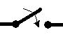
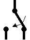
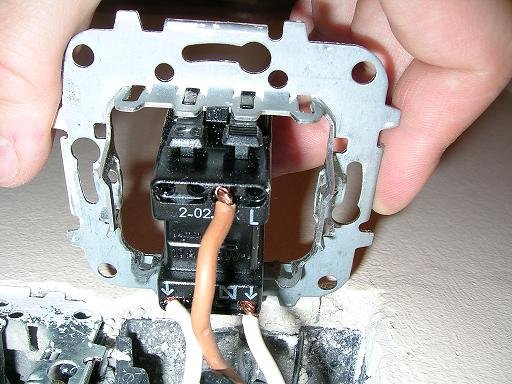
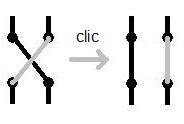
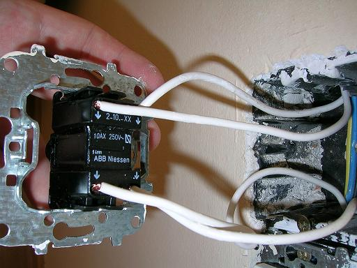
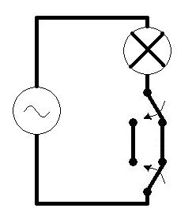
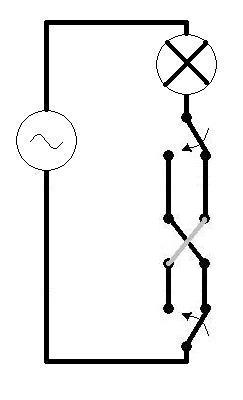

Breve exposición del funcionamiento de las luces conmutadas que se encuentran habitualmente (o no) en una casa. Se utiliza a modo de ejemplo el caso de una habitación doble.
Interruptor - Dispositivo que abre o cierra un circuito eléctrico.

Conmutador - Dispositivo que conecta un extremo de un circuito con otros dos alternativamente.

Conmutador cruzado - Dispositivo que conecta dos extremos de un circuito a otros dos alternativamente y de forma cruzada.

Pulsador - Interruptor que solo se mantiene cerrado mientras alguien lo está pulsando.
La habitación tenía un conmutador a la entrada, pero a la cabecera de la cama habían dos pulsadores. Esto hacía que fuera necesario cada noche levantarse hasta la entrada y entrar a la cama a oscuras, o bien mientras otra persona mantenía accionado uno de los pulsadores en la cabecera.
En una primera fase, sólo se disponía de un conmutador, por lo que se realizó el montaje que indica el esquema, sustituyendo un pulsador por un
conmutador y anulando el otro pulsador. La figura muestra el esquema del circuito.

Finalmente, se instaló un conmutador cruzado en el lugar del pulsador anulado y tras esto ya fue posible apagar y encender alternativamente la luz
de la habitación desde las tres llaves.
